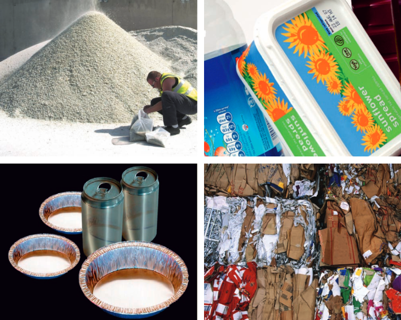
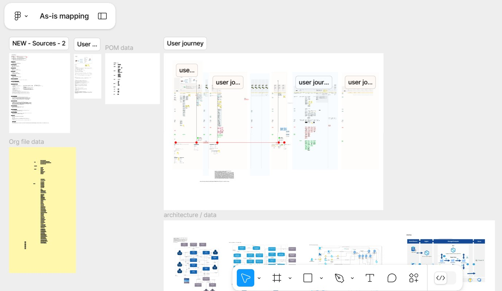
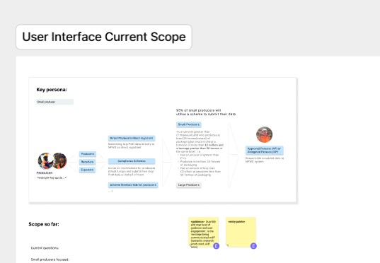
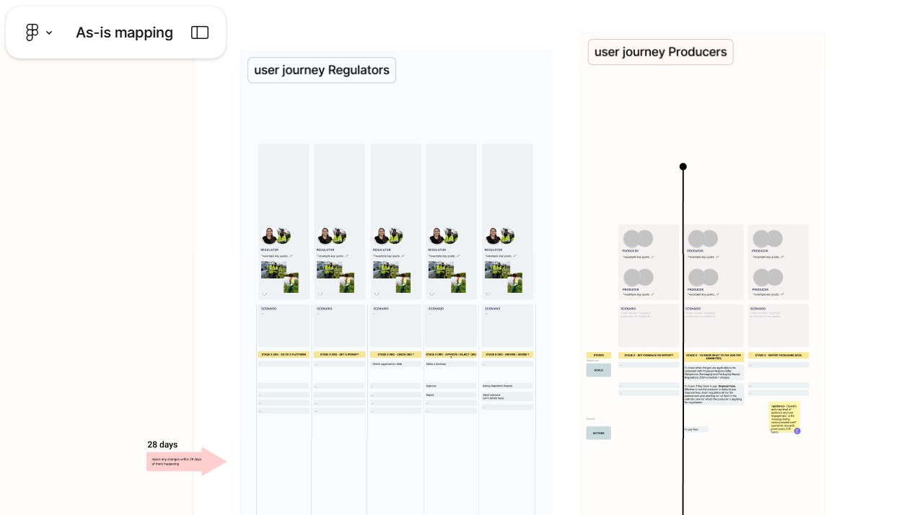
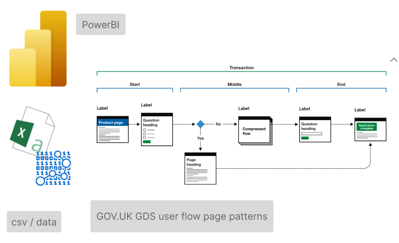
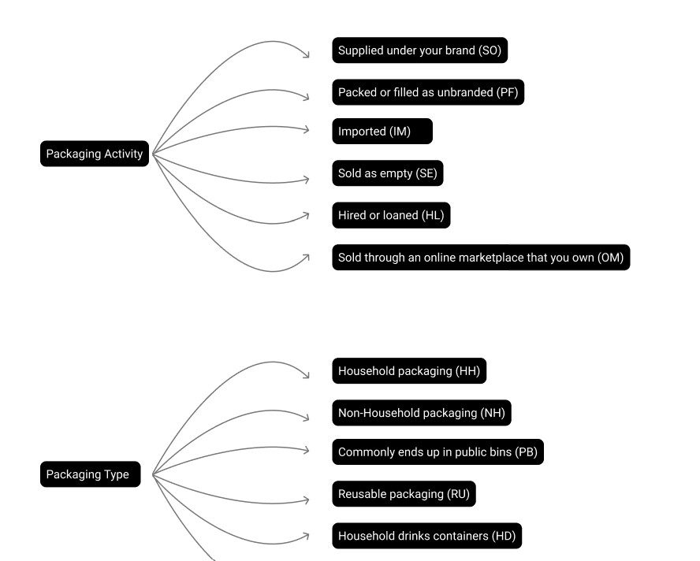
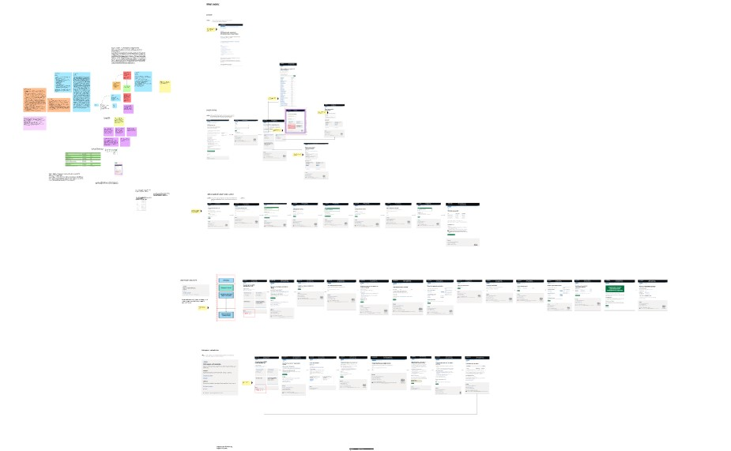

This is a ready-to-print page
DEFRA
Extended Producer Responsibility (EPR), Packaging Recovery Notes (PRN), and Materials Facilities
The Department for Environment, Food and Rural Affairs (DEFRA) is the UK government department responsible for improving and protecting the environment. Within this context, projects such as Extended Producer Responsibility (EPR), Packaging Recovery Notes (PRN), and Materials Facilities support more sustainable waste management, clearer regulatory processes, and better environmental accountability across the packaging lifecycle.
EPR is a regulatory framework that holds producers responsible for the environmental impact of the packaging they place on the market. Packaging Recovery Notes help demonstrate compliance with recycling obligations, while Materials Facilities play a key role in sorting and processing recyclable materials. Together, these services contribute to a more circular economy and encourage better environmental outcomes.

Source image: DEFRA - Making the most of packaging
The challenge
The challenge was to shape digital services around complex regulatory processes involving environmental compliance, reporting, recycling evidence, and data handling. The users of these services, particularly producers and regulators, often needed to navigate detailed requirements, large amounts of information, and cross-platform tasks that were not always easy to understand or connect.
This made the work not just about interface design, but about simplifying complexity, identifying real user needs, and designing clearer service journeys around tasks, data, and decision-making. A key part of the challenge was ensuring the experience aligned with GDS standards while also supporting a more seamless, joined-up journey across related systems and touchpoints.
My role
My role was primarily focused on user interface design and user experience design, with elements of user research and service design. I worked on understanding both business and user needs, shaping journeys, improving clarity, and translating complex regulatory processes into more structured and usable service experiences.
I created user flow diagrams, empathy maps, task maps, discovery journey maps, and page flows aligned with the UK Government Digital Service (GDS) Design System. I also updated online prototypes using the GOV.UK Prototype Kit, GitHub, and Nunjucks, helping connect research, flows, and interface design into functional prototype journeys.

Process and approach
I began by building a strong understanding of the regulatory context, user needs, and the specific problems the service needed to solve. This included reviewing previous research, documentation, user interviews, and workshop outputs, as well as collaborating closely with stakeholders across the project.
To structure my thinking, I created a lean UX canvas, user task maps, empathy maps, user diaries, and discovery journey flows to identify critical moments in the experience. This helped uncover where users were getting stuck, what they were trying to achieve, and how the service could better support them.
A core part of the process involved identifying the real users of the service, particularly producers and regulators, and understanding their objectives, behaviours, and pain points across platforms such as GOV.UK services and Power BI environments. I also created user task diagrams and data maps to visualise the relationship between user goals, data flow, and service interactions, helping bring more alignment and clarity to the wider system.


I analysed service touchpoints holistically, with the aim of improving the overall journey rather than isolated screens. This meant working with an omnichannel perspective, ensuring that flows, content, data, and interface patterns connected more coherently across the service.


Source images: GDS flow diagrams - Figma community - MHCLG and Paul Smith, Wikipedia PowerBI logo, DEFRA CSV file data mapping.

My contribution
My contribution focused on making complex environmental compliance services more understandable, better structured, and more user-centred. By combining UX thinking, interface design, and lightweight research methods, I helped uncover user needs and translate them into clearer journeys, flows, and prototype experiences.
I brought together research insights, journey mapping, task analysis, page patterns, and prototyping to improve alignment between business objectives, user goals, and service delivery. This included refining flows around producers and regulators, clarifying relationships between tasks and data, and supporting a more cohesive experience across multiple platforms and service touchpoints.
Overall, my role helped shape a more holistic and usable service direction, balancing regulatory complexity with clarity, usability, and better design thinking across the experience.